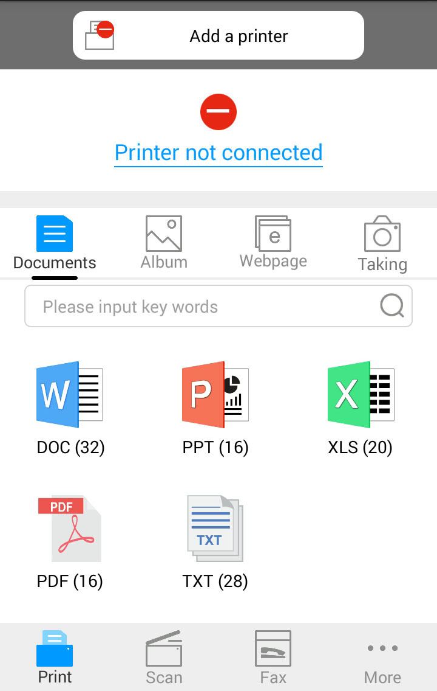

6. Pantum Mobile Print
6.1. ¿Qué es Pantum Mobile Print?
Pantum Mobile Print es una aplicación gratuita que permite a los usuarios imprimir fotos, documentos y páginas web directamente desde un terminal móvil. Mobile Print de Pantum soporta el sistema operativo móvil Android 4.0-7.0 con una resolución de 480*800dpi o superior y una pantalla de 3,5".La aplicación conecta el dispositivo móvil con la impresora a través de puntos de acceso Wi-Fi. Solo necesita instalar la aplicación Pantum Mobile Print para configurar los ajustes de red y las impresoras compatibles para imprimir se detectarán automáticamente. Se trata de una función práctica y eficaz.
*ppp son puntos por pulgada
6.2. Descarga de Pantum Mobile Print
Para descargar la aplicación Pantum Mobile Print, acceda al sitio web oficial de Pantum (www.pantum.com).
6.3. Sistema operativo móvil admitido
Soporta Android OS 4.4-8.0.
6.4. Cómo usar dispositivos móviles para la impresión móvil
6.4.1.Para dispositivos Android
6.4.1.1.Preparaciones
1. Impresora con función de red inalámbrica.
2.Dispositivo móvil Android.
6.4.1.2. Procedimiento de operación
1. Encienda la alimentación de la impresora.
2. En el dispositivo móvil de Android, haga clic en el icono "PANTUM" en la pantalla principal,aparece la siguiente interfaz.

3. Presione el botón “Add a printer” en la parte superior del interfaz, después elija el modo en función de sus preferencias para añadir la impresora.
4. Elegir la función que necesita, haga los ajustes apropiados para satisfacer sus necesidades.
 |
Nota: |
• Si la operación falla, compruebe si el dispositivo móvil Android está conectado a la red inalámbrica de la impresora. • Si el dispositivo móvil Android no ha detectado ninguna impresora, compruebe si la impresora está conectada a la fuente de alimentación, y si la impresora está encendida o no. • Para más detalles, por favor, refiérase al manual de usuario de impresoras móviles adjunto. |